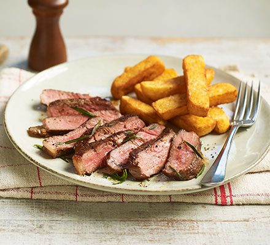

The Ultimate Sirloin Steak

How to cook the ultimate sirloin steak
A lot goes into cooking the ultimate sirloin steak. A perfectly cooked pink and juicy sirloin steak is a luxury that many of us only get to enjoy at a restaurant. This guide will show you how.
Ingredients
- 2 sirloin steaks, measuring 3cm in thickness
- vegetable oil, or groundnut oil
- 1 knob of butter
- 1/4 bunch of thyme
- 3 garlic cloves, bashed, but unpeeled
- sea salt
- black pepper